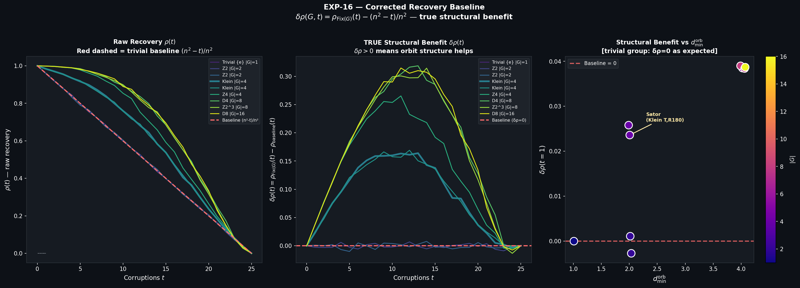

When an informational space is constrained by symmetry, its degrees of freedom are drastically reduced. Instead of evaluating independent properties, any localized analysis observes facets of a globally locked structure. In linguistic and historical contexts, the Sator Square ($5 \times 5$ Latin word square) operates under such a robust geometric symmetry that reading operations from multiple origins yield the identical token sequence.
The objective of this paper is to abstract the mechanism of the Sator Square from its historical context and propose a formal generalization: Geometric symmetry induces orbital redundancy, orbital redundancy induces informational invariance, and informational invariance offers passive protection against noise.
We systematically formalize the actions of finite groups (such as $\{e\}$, $\mathbb{Z}_2$, $\mathbb{Z}_4$, the Klein four-group, $D_4$, and $D_8$) on a square grid. We measure how these abstract symmetries collapse the entropy of the matrices, force invariance under transition metrics, and provide robust structural recovery purely via topological constraints, without invoking active classical error-correction mechanisms.
Let $[n]^2 = \{(i,j): 0 \le i,j < n\}$ represent the coordinate grid, and let $\Sigma$ be a finite alphabet of symbols ($|\Sigma| = 26$). A matrix is a mapping $M: [n]^2 \to \Sigma$. We consider the action of a finite group of symmetries $G \curvearrowright [n]^2$ representing permutations of the grid coordinates (such as transpositions and rotations).
A matrix $M$ belonging to $\mathrm{Fix}(G)$ is highly redundant. If $\mathcal{O} \in \mathrm{orbits}(G)$ has $|\mathcal{O}| > 1$, a single symbol choice populates multiple coordinates simultaneously. The structure behaves as a rigidly constrained lattice.
The unconstrained symbolic space possesses volume $|\Sigma|^{n^2}$ and total maximum entropy $H_{\max} = n^2 \log_2|\Sigma|$. Under symmetry $G$, the effective dimension drops to $|\Sigma|^{|\mathrm{orbits}(G)|}$. We define the symmetry compression ratio as $\kappa(G,n) = |\mathrm{orbits}(G)| / n^2$.
A naive application of Burnside-style counting suggests that the number of orbits might be bounded below by $n^2 / |G|$, implying $\kappa \ge 1/|G|$. However, computational evaluation over various finite groups demonstrates this is a weak assumption. For example, specific instances like $\mathbb{Z}_2 \times \mathbb{Z}_2$ (acting via transposition and horizontal reflection) achieve $\kappa = 0.24 < 1/4$ at $n=5$. This refutes the naive bound inspired by Burnside-style orbit counting, not Burnside's lemma itself. Therefore, the specific geometric topology of the fixed points controls compression to a greater degree than the standalone group order.
We formalize the entropy lost to structural rigidity via the Information Action.
Table I lists the calculated action $\mathcal{A}$ for assorted groups. The action is an exact metric of the "cost" paid in entropy to maintain global symmetry. Interestingly, an increase in $|G|$ does not strictly guarantee maximum action if the operators leave large sections of the grid invariant.
| Group $G$ | $|G|$ | $|\mathrm{orbits}(G)|$ | $\kappa$ | $\mathcal{A}$ (bits) |
|---|---|---|---|---|
| Trivial $\{e\}$ | 1 | 25 | 1.00 | 0.00 |
| $\mathbb{Z}_2$ (T) | 2 | 15 | 0.60 | 47.00 |
| Klein $G_0$ (T, R180) | 4 | 9 | 0.36 | 75.21 |
| $\mathbb{Z}_4$ (R90) | 4 | 7 | 0.28 | 84.61 |
| $D_4$ (R90, T) | 8 | 6 | 0.24 | 89.31 |
A canonical property of the Sator Square is reading-direction invariance. We generalize this by reading $M \in \mathrm{Fix}(G)$ in standard sequence (e.g., Left-to-Right, Top-to-Bottom). We denote these directional sequences as $\mathcal{D}$.
Measuring simple marginal Shannon entropy $H_{\text{freq}}$ over these sequences is trivial; by definition, structural transpositions equate rows and columns, leading to a variance $\mathrm{Var}(H_{\text{freq}}) = 0$. This tests nothing beyond the axioms. We introduce a more rigorous metric: transition entropy $H_{\text{trans}}$, measuring the conditional uncertainty of bigrams $H(X_{t+1}|X_t)$.
In EXP-17, groups like $D_4$, $D_8$, and Klein $G_0$ forced $\mathrm{Var}(H_{\text{trans}}) \to 0$, indicating that not only the symbols, but their adjacency structures are rotationally/isotropically locked. Trivial and weak $\mathbb{Z}_2$ groups failed this strict constraint, showing measurable variance across directions. This effectively filters purely mathematically trivial groups from those producing deep topological rigidity.
Symmetry induces redundancy capable of withstanding noise. We utilize a targeted corruption model: Isfet corrupts exactly $t$ uniformly selected positions with random replacement overriding symbols. A passive recovery operator, Ma'at, surveys the matrix and replaces each cell with the majority-vote symbol among its formally mandated orbit peers.
If no structural relationships exist, the expected fraction of uncorrupted cells forms our baseline: $\rho_{\text{baseline}}(t) = (n^2-t)/n^2$. For the trivial group $\{e\}$ at $t=1$, this evaluates to 96%. To measure true structural benefit, we calculate $\delta\rho(t) = \rho_{\mathrm{Fix}(G)}(t) - \rho_{\text{baseline}}(t)$.

The resilience of the system is not predicted linearly by the group's order $|G|$ but by its weakest internal linkage.
Table II summarizes empirical recovery values and $d_{\min}^{\mathrm{orb}}$. Both $D_8$ ($|G|=16$) and $\mathbb{Z}_4$ ($|G|=4$) possess $d_{\min}^{\mathrm{orb}} = 4$, and consequently, both deliver virtually identical structural benefit $\delta\rho \approx +0.038$.
| Group $G$ | $|G|$ | $d_{\min}^{\mathrm{orb}}$ | $\delta\rho(t=1)$ |
|---|---|---|---|
| Trivial $\{e\}$ | 1 | 1 | +0.000 |
| $\mathbb{Z}_2$ (T) | 2 | 2 | -0.002 |
| Klein $G_0$ | 4 | 2 | +0.023 |
| $\mathbb{Z}_4$ (R90) | 4 | 4 | +0.038 |
| $D_4$ (R90, T) | 8 | 4 | +0.039 |
| $D_8$ (R90, T, Rh) | 16 | 4 | +0.038 |
The Sator Square is governed by the Klein group $G_0$ representing simultaneous transpose equality and 180° rotational symmetry. Sitting at $d_{\min}^{\mathrm{orb}} = 2$, it is neither maximally compressed nor maximally error-resilient. Rather, it represents the minimum complexity threshold at which orbit-induced redundancy manifests non-trivial structural benefit and absolute invariance metrics.
This realization demystifies its existence over linguistic history: it is the simplest topological construction that supports simultaneous multi-directional reading coherence without requiring complex non-abelian group symmetries, which would be insurmountably sparse in natural language lexicons.
This computational and topological framework presents an abstraction of redundancy applicable to domains far removed from symbolic word matrices. While current evaluations deal strictly with the properties of arrays over a finite alphabet, future developments should extend these investigations into localized quantum physical structures and holography analogs.
Particularly, under speculative physical analogies, $d_{\min}^{\mathrm{orb}}$ directly echoes the role of topological protection layers in stabilizer codes, and the structural density metric $\kappa$ mirrors boundary-bulk ratios inherent to discrete lattice variants of AdS/CFT holography. Validating any physical correspondence demands precise falsifiable mappings representing our next investigative phase.